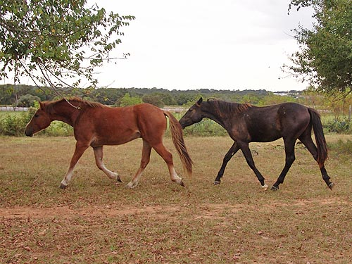
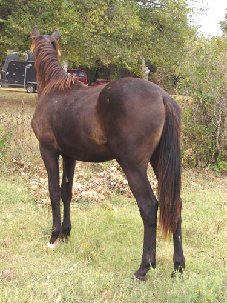
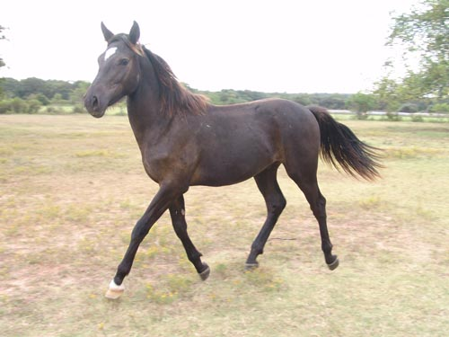
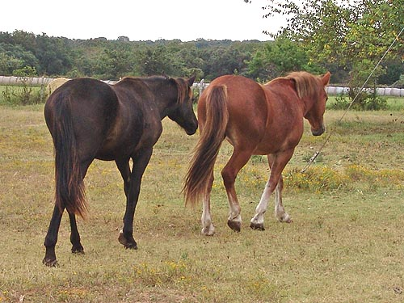
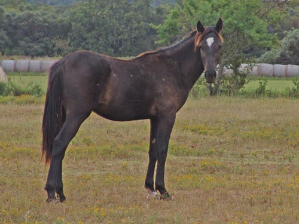
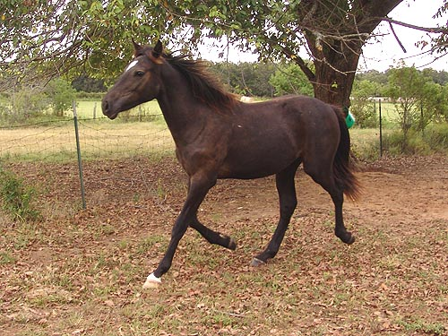

Miaren - Happy to
see Thistle return Thistle came over to my place for a little
training. Miaren
was getting a bit too playful, so I took
Thistle back out to keep him
company.

Two peas in a pod. Miaren is a yearling
and Thistle is two, so Miaren has to be everywhere that Thistle is and
do what he does.

Miaren's nowhere near as big as Thistle,
but he is starting to bulk up and hasn't had any trouble keeping weight
on this summer.

I'll have fun turning that neck around,
but I love the topline I'll have to work with and the bone he's got.

Thistle is supposed to mature around
16 hh.
It looks like Miaren will be taller than
that.

Still a bit awkward, but I'm really
pleased with how the parts seem to be
coming together.

Hopefully having Thistle around will
increase his play time.